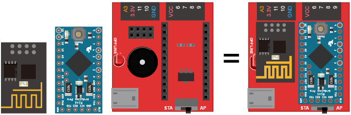

Webduino 的基本介紹
Webduino 這個名稱的由來，就是 Web 與 Arduino 這兩個單字的結合，也正式宣告了可以用 Web 控制 Arduino 的時代來臨，雖然目前市面上也有一些類似的技術或解決方案，但千篇一律的都是寫 C/C++ 讓 Arduino 可以連上網，或是透過網路的方式將 C/C++ 寫入 Arduino，幾乎沒有能夠純粹利用 Web 技術去控制 Arduino 的方式。
Webduino 有別於傳統要寫 C 或 C++ 才能控制 Arduino 的傳感器，Webduino 利用了 WebComponents 的方法，讓使用者可以在完全不用接觸 C 或 C++ 的情形下，只需要撰寫簡單的網頁程式 ( HTML 與 Javascript )，就可以串接 Arduino，大幅降低開發的門檻，讓創造力不受技術門檻的拘束，利用各式各樣形形色色的傳感器，創造與眾不同的物聯網應用。
Webduino 與 Arduino 的差異
| Arduino | Webduino | |
|---|---|---|
| 開發語言 | C / C++ | HTML / JavaScript |
| 開發環境 | Arduino IDE | 瀏覽器 / ... |
| 連接方式 | USB | WiFi |
| 更新程式 | 連接燒錄 | 立即更新 |
什麼是 Webduino 開發板？
Webduino開發板是結合了 Arduino Pro Mini 和 WiFi 模組晶片，所開發出來的電路板，只要插電源就會自動連上雲端，方便開發者進行物聯網裝置的研發與應用。

Webduino 開發板是一塊易學易用的物聯網開發板，不管是入門使用者、進階開發者、資深研究者等，不需要理會硬體的煩雜技術，只需用 Web 技術，就可以控制 Arduino 相容的感應模組的神兵利器！如下圖示，任何前端開發工程師只要用 HTML 與 JavaScript ，就可以立即點亮 LED 燈。

Webduino 的開發方式
Webduino 整合了最新的Web元件化技術 ( WebComponents )，開發者只要使用自訂 HTML 標籤，就可以完成 Webduino 開發板的連接與物聯網裝置的監控，每一片 Webduino 開發板都預設有一個專屬的雲端通道代碼，開發者只要撰寫 HTML 標籤，在 device 屬性填入雲端通道代碼，這個網頁就可以輕易完成和 Webduino 開發板的連線。
Webduino 在未來物聯網的發展趨勢
未來的物聯網市場，可能是 IT 產業發展至今所遇到前所未有的發展契機，在廣大的使用者當中，包含了非常多樣化與異質化的使用族群，唯有更簡易、方面與跨平台的觀念和開發模式，可以滿足這些使用者的需求，並在未來的物聯網應用中，佔據不倒的地位，然而，憑藉著這樣概念發展出的 Webduino，是值得讓所有的 HTML/JavaScript 前端開發者，當成進攻物聯網市場的神兵利器！
如果您還想了解更多，可以參考：
2. Blockly 教學：https://goo.gl/h6s7GY
3. 產品總覽：https://webduino.io/buy.html
4. 露天賣場：http://goo.gl/0Dj9ip